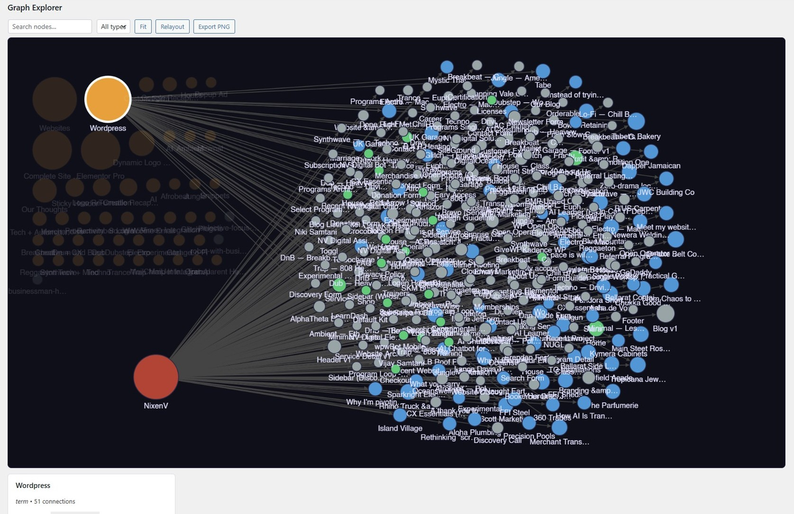
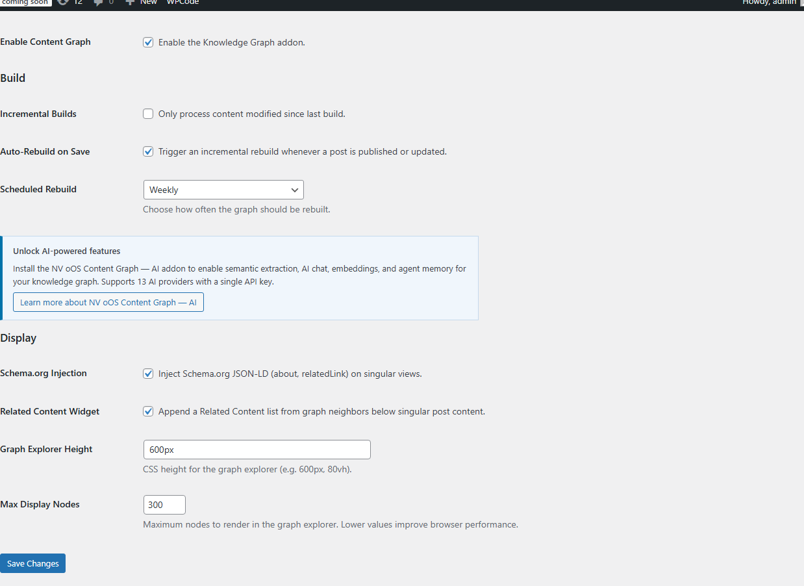
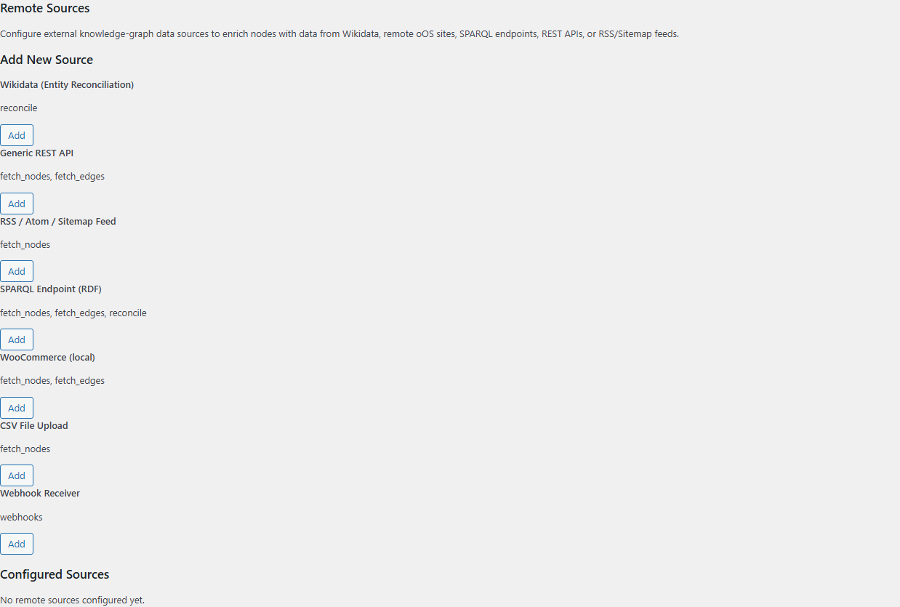
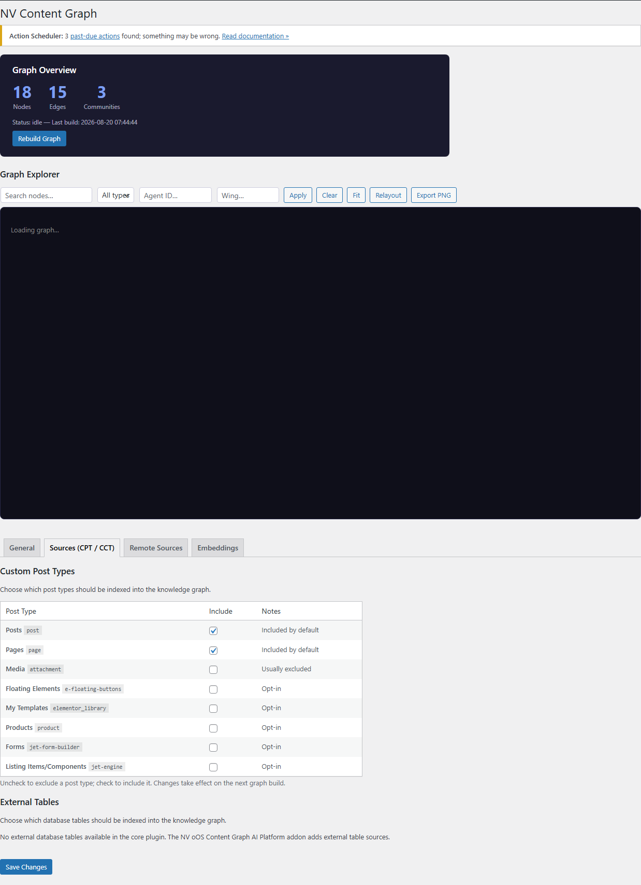
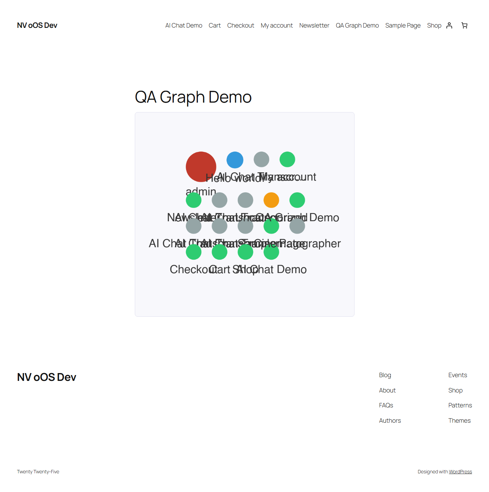
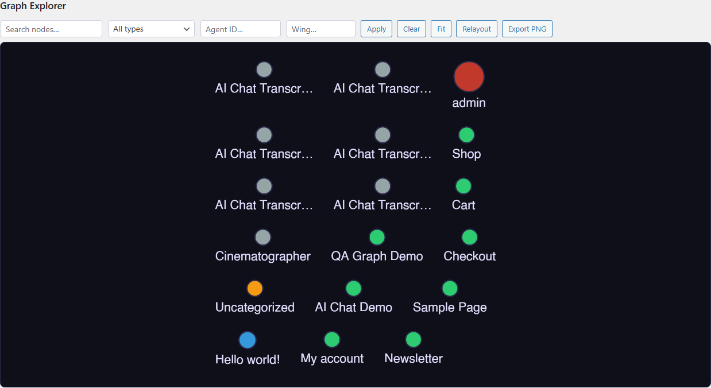

Description
NV oOS Content Graph transforms your WordPress content into a visual knowledge graph — organized, searchable, and interactive. Every post, page, category, tag, and author becomes a node; every relationship becomes an edge.
No API keys. No AI required. The core graph engine runs entirely on your WordPress server using your existing content. Optional remote sources (like Wikidata) are opt-in.
What You Get
One-Click Graph Builder
Click "Build Graph" and ~10-30 seconds later, your entire site becomes a visual graph. Supports incremental rebuilds and scheduled cron updates.
Interactive Graph Explorer
Explore your content visually using Cytoscape.js. Search for nodes by label, click for details, zoom and pan. Color-coded by content type (posts, pages, terms, users).
Content Gap Analysis
Discover orphan content (no internal links), thin topic clusters, and missing link opportunities. Generate actionable content strategy recommendations.
Six Export Formats
Download your graph as JSON (NetworkX), GraphML (Gephi/yEd), CSV, Neo4j Cypher, Obsidian vault, or standalone HTML page.
Schema.org JSON-LD
Automatic structured data injection for SEO — taxonomy terms as about and internal links as relatedLink.
Related Content Widget
Appends graph-neighbor posts to your content based on knowledge graph proximity.
REST API
Full programmatic access with 14 endpoints. Read endpoints require the read capability (all logged-in users) or a valid guest token (guest tokens are provided by the NV oOS base plugin when installed); write endpoints require manage_options.
Extensible Tool System
14 built-in tools for graph operations: query, search, traverse, analyze, export. Addon plugins can register their own tools.
Addon Ecosystem (all optional)
- nvoos-content-graph-ai — AI chat assistant with 13 AI providers, AI tools, embeddings, RAG, and agent memory
- nvoos-content-graph-ai-platform — agents, skills, slash-commands, professions, A2A, ACP, and federation
Screenshots






FAQ
Do I need an API key?
No. The core graph engine works with zero external dependencies. AI features require their respective addon plugins and API keys.
How long does a build take?
~10-30 seconds for a typical WordPress site (100-500 posts). Large sites (10,000+ posts) may take 1-2 minutes.
Can I build incrementally?
Yes. Enable "Incremental Builds" in settings to only process content changed since the last build.
Is this compatible with my theme?
Yes. The graph explorer, shortcode, related content widget, and schema.org injection work with any theme. The shortcode [nvoos_graph] embeds wherever you place it.
Does it work with custom post types?
Yes. Any public post type (including JetEngine CPTs) is automatically detected. You can configure which post types to index in Settings.
Does the plugin connect to external services?
The core graph engine runs entirely on your server. The optional "Resolve External Entity" tool queries Wikidata (wikidata.org) when you explicitly ask it to look up a QID. Remote source drivers connect to user-configured endpoints (REST APIs, RSS feeds, SPARQL, etc.) only when you set them up in Settings.
Does it work on multisite?
Yes. The plugin supports WordPress multisite with per-site configuration.
What happens if I deactivate?
Cron schedules are cleared. Your data stays intact — reactivate at any time.
What happens if I uninstall?
All custom tables and options are removed (see uninstall.php). Export your graph first if you want to keep it.
Reviews
No reviews yet. Be the first to review this plugin.
Installation
- Upload the
nvoos-content-graphfolder to/wp-content/plugins/ - Activate the plugin through the 'Plugins' menu
- Go to Knowledge Graph → Settings
- Click "Build Graph"
That's it. Your content is now a knowledge graph.
Contributors & Developers
NV oOS Content Graph is open source software licensed under GPL-3.0-or-later. It is developed by NV Digital Solutions.
Source on GitHub: nvdigitalsolutions/nvoos-content-graph.
Changelog
1.0.3
- Encrypt remote-source credentials (AES-256-GCM) before storing them
- Fix
[nvoos_graph]shortcode and block embed (invalid inline script) - Wire the Scheduled Rebuild setting to WP-Cron (new "Never" option)
- Fix the admin Test button and REST /test endpoint (now use per-source credentials)
- Reject unknown drivers and sanitize config in both source-creation paths
- Re-validate redirects against the SSRF guard
- Preserve external_id, source_slug, confidence, and expires_at on node updates
- Remote Sources modal now renders schema field types correctly
- Remove the unregistered Graph Explorer admin page (embedded in Settings)
- Ship the Composer autoloader intact in distribution builds
- Restrict tool-level auto-ingest to administrators
- Add WordPress.org screenshot assets (.wordpress-org/assets)
1.0.2
- Renamed from "NV oOS Graphify" to "NV oOS Content Graph" (new slug
nvoos-content-graph) - Hardened Schema.org JSON-LD output against script-tag breakout
- Restricted REST
/resolveauto-ingest to administrators - Replaced inline admin JavaScript with enqueued asset
- Added external-services disclosure (Wikidata terms and privacy policy)
- Field-map validation is now self-contained (no legacy addon dependency)
- Embeddings reindexing bridges to the AI addon's embedding service
1.0.0
- Initial standalone release
- PSR-4 architecture:
NvoosContentGraph\namespace - 5 custom database tables with dbDelta() migrations
- 14 built-in tools implementing
NvoosContentGraph\Contracts\Tool - 14 REST API endpoints at
/wp-json/nvoos-content-graph/v1/ - Cytoscape.js graph explorer (admin + frontend)
- Tabbed settings page with per-tab sanitisation
- 6 export formats (JSON, GraphML, CSV, Neo4j, Obsidian, HTML)
- Schema.org JSON-LD injection for SEO
- Related content widget based on graph proximity
- Louvain community detection + content gap analysis
[nvoos_graph]shortcode + Gutenberg block- JetEngine Custom Content Type (CCT) support
- WordPress multisite compatible
- PHP 8.1+, WordPress 6.5+, GPL-3.0-or-later